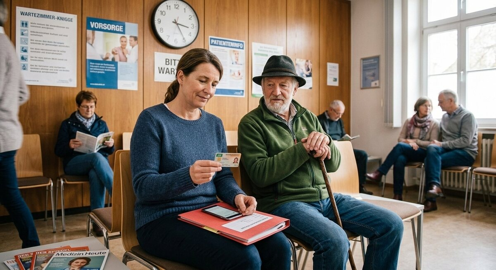

Teil 2 · Bild und Erfahrung
Karte 015
Beim Arzt im Wartezimmer
Ausführliches Übungsmaterial zur Vorder- und Rückseite der Karte.

Ihre Aufgabe
- die Personen auf dem Bild
- den Ort
- warum die Menschen dort sein könnten
- was man in einer Arztpraxis oft machen muss
- Ihre eigenen Erfahrungen mit Arztterminen
Interaktives Sprechtraining
Mit ChatGPT sprechen üben
Kopiere zuerst die Übungsanweisung. Öffne anschließend die ChatGPT-App oder ChatGPT im Browser, starte den Sprachmodus (Voice Mode) und füge den Prompt in diesen Chat ein.
- Tippe auf „Prompt kopieren“.
- Öffne anschließend die ChatGPT-App oder nutze den Browser-Link.
- Melde dich bei Bedarf an und starte in ChatGPT zuerst den Sprachmodus (Voice Mode).
- Füge den bereits kopierten Prompt in den Chat des Sprachmodus (Voice Mode) ein und sende ihn ab.
- Beginne anschließend die Sprechübung.
- Wenn du die Übung beenden und Feedback bekommen möchtest, sage:
Die Übung ist beendet. Bitte gib mir jetzt Feedback.
Prompt anzeigen oder manuell kopieren
ChatGPT ist ein externer Dienst. Für den Sprachmodus (Voice Mode) musst du dich möglicherweise bei deinem ChatGPT-Konto anmelden und den Zugriff auf das Mikrofon erlauben. Verfügbare Funktionen hängen von deinem Gerät und Konto ab. Die Übung ersetzt keine offizielle Prüfungsbewertung.
Nützliche Satzanfänge
- Ich sehe ein Wartezimmer …
- Die Frau wartet wahrscheinlich auf …
- In einer Arztpraxis muss man oft …
- Manchmal ist das angenehm / unangenehm, weil …
- Bei mir war es einmal so, dass …
Modellantwort anhören
Höre zuerst aufmerksam zu. Sprich danach nicht einfach alles nach, sondern bearbeite die Aufgabe mit eigenen Informationen.
Modellantwort
Ich sehe auf dem Bild ein Wartezimmer in einer Arztpraxis. Dort sitzen mindestens zwei Personen. Eine Frau sitzt vorne und wartet wahrscheinlich auf ihren Termin. Vielleicht hat sie Schmerzen oder sie ist für eine Kontrolle da. Neben ihr sitzt ein älterer Mann. An der Wand hängen Informationen, und die Uhr zeigt, dass die Patienten schon eine Weile warten.
In einer Arztpraxis muss man sich zuerst anmelden und oft auch die Versichertenkarte zeigen. Manchmal geht alles schnell, aber manchmal wartet man länger. Das kenne ich auch. Als ich einmal starke Halsschmerzen hatte, musste ich ebenfalls im Wartezimmer sitzen. Ich finde Arztbesuche nicht besonders angenehm, aber sie sind natürlich wichtig, besonders wenn man krank ist.
Mögliche Prüferfragen und Antwortideen
-
Gehen Sie schnell zum Arzt oder warten Sie eher lange?
Antwortidee: Wenn ich nur leicht krank bin, warte ich manchmal. Bei stärkeren Beschwerden gehe ich aber sofort.
-
Was ist für Sie in einer Arztpraxis wichtig?
Antwortidee: Wichtig sind für mich Freundlichkeit, klare Informationen und nicht zu lange Wartezeiten.
-
Haben Sie schon einmal einen Termin telefonisch gemacht?
Antwortidee: Ja, das war am Anfang schwierig, aber jetzt klappt es besser.
-
Welche Wörter brauchen Sie beim Arzt besonders oft?
Antwortidee: Zum Beispiel Schmerzen, Termin, Rezept und Untersuchung.
Wortschatz
| Deutsch | Englisch |
|---|---|
| das Wartezimmer | waiting room |
| die Versichertenkarte | health insurance card |
| die Kontrolle | check-up |
| sich anmelden | to register |
| die Wartezeit | waiting time |
| die Untersuchung | examination |
| das Rezept | prescription |
| die Beschwerden | symptoms / complaints |
Schnelltraining
Üben Sie zwei Varianten: „Ich habe einmal … erlebt.“; „Normalerweise mache ich es so, dass …“.